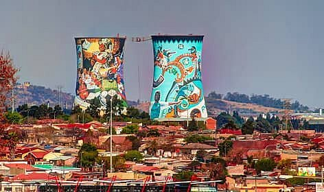

Welcome to Johannesburg & Soweto
Johannesburg, also called “Jo’burg” or “Jozi,” is South Africa’s largest city and the economic hub of the country. It’s a bustling metropolis with a mix of modern life, rich history, and vibrant culture.
Top attractions include the Apartheid Museum, a guided tour of Soweto to learn about the city’s history, and exploring the urban art and local markets that showcase Johannesburg’s energy.